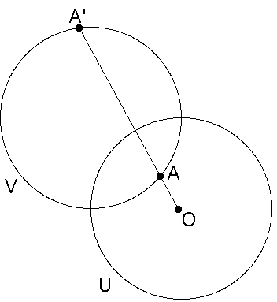
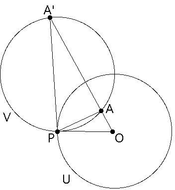

If circles U and V intersect orthogonally, the inverse in U of any point of V is another point of V.
|  |
| Construction On the left we are given two orthogonal circles U and V and the point A lying within the circle U. |
| Draw a line through A and O, the center of U. |
| This line meets V at A', the inverse of A with respect to U. |
|  |
| Proof Draw segments OP, PA, and PA'. |
| We claim triangles OAP and OPA' are similar. |
| To see this, start by noting the angle at O is shared by both triangles. |
| The segment OP is a radius of U, hence is tangent to V at P. |
| The angles PA'A and APO intercept the same arc PA, and OP is tangent to V, so the angles PA'A and APO are equal. |
| Consequently, the triangles OAP and OPA' are similar. |
| As before, we see |
| Cross-multiplying shows A and A' are inverses with respect to U. |
That is, inversion in a circle U preserves all circles V that intersect U orthogonally. Of course, points of V that lie inside U are taken to points of V that lie outside U.
Return to Basic constructions.